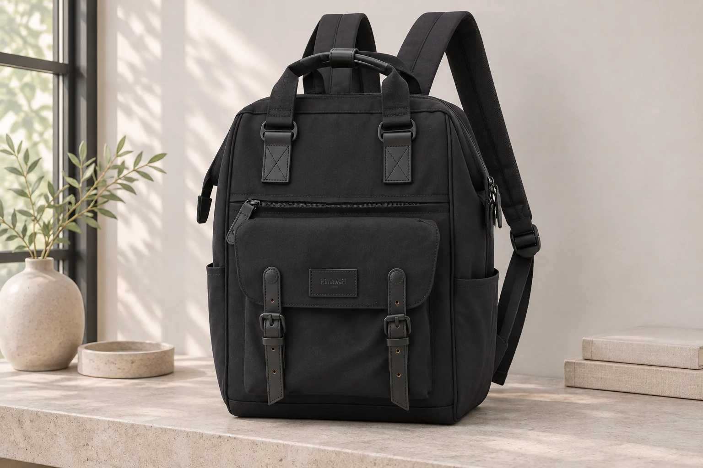
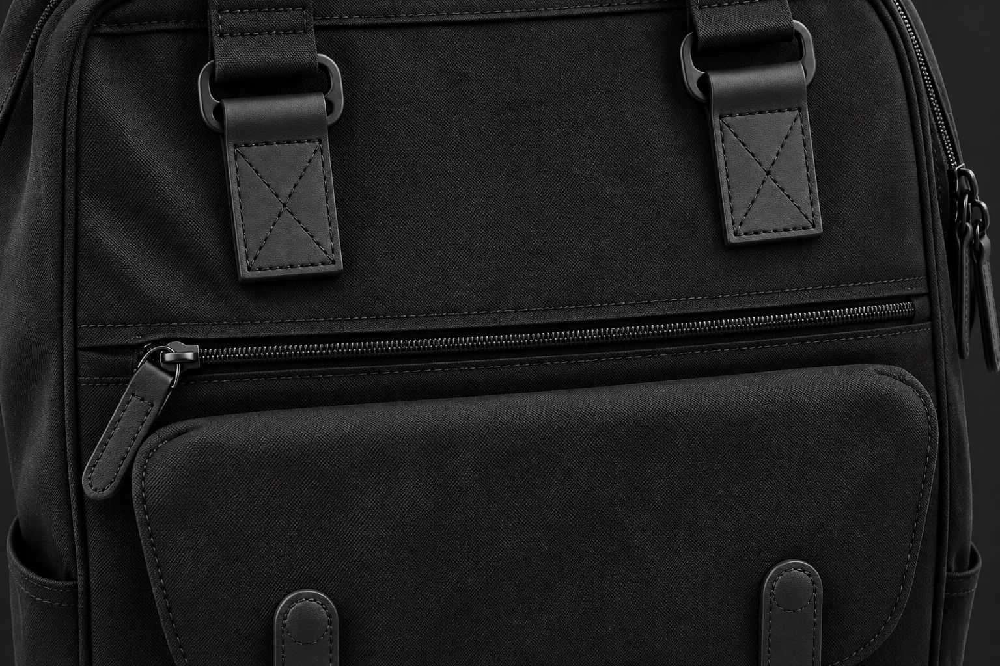
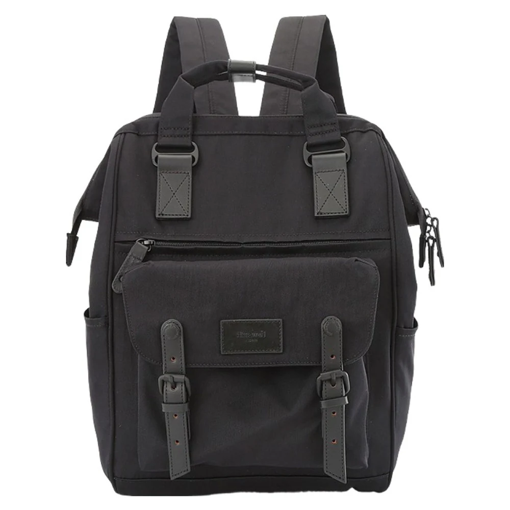

백팩에 입구가 여러 개면 큰 수납실도 여러 개일까

백팩을 고르며 지퍼 손잡이부터 세어 본 적이 있나요. 앞에서 보이는 지퍼와 옆으로 돌아가는 지퍼를 더해 큰 칸이 여러 개라고 생각하기 쉽습니다. 그러나 바깥에서 여는 입구의 수와 안쪽에서 나뉘는 공간의 수는 서로 다른 정보입니다. 짐을 분리하려는 사람에게는 몇 번 열 수 있는지보다 열고 난 뒤 어느 공간으로 이어지는지가 더 중요합니다.
No.9018 블랙의 실제 제품 사진에는 윗부분을 따라가는 지퍼와 앞면의 가로 지퍼, 아래쪽의 덮개가 보입니다. 여기서는 이 외부 구조를 질문의 출발점으로 삼습니다. 사진에 없는 내부 칸막이나 연결 통로는 그려 넣지 않았습니다. AI 연출 사진도 닫힌 외관만 보여 주므로 해당 모델의 수납실 개수를 확정하는 자료로 쓰지 않습니다.
지퍼 손잡이 두 개는 입구 두 개일까요
같은 지퍼 길을 따라 움직이는 슬라이더 두 개라면 하나의 입구를 양쪽에서 여는 구조일 수 있습니다. 손잡이 개수만 세면 같은 입구를 중복해서 세게 됩니다. 사진에서는 두 손잡이가 어느 지퍼 선에 연결되는지부터 보세요. 서로 다른 선처럼 보이더라도 봉제선이나 테두리일 수 있으므로 슬라이더와 실제 맞물린 부분을 함께 확인합니다.
가방의 한쪽 옆면에서 지퍼 손잡이가 여러 개 보이는 경우도 있습니다. 앞뒤 입구의 끝이 한곳에 모였는지, 한 입구의 두 슬라이더가 나란히 있는지 사진 한 장으로는 헷갈릴 수 있습니다. 이럴 때는 손잡이에 번호를 붙여 칸 수를 바로 계산하지 않습니다. 지퍼가 이어지는 방향이 보이는 사진을 찾습니다. 닫힌 외관에서 알아볼 범위를 넘는 부분은 열어 놓은 자료가 필요합니다.
No.9018의 가로 지퍼와 덮개처럼 앞면에서 서로 떨어진 여밈도 보입니다. 개방 사진이나 설명과 대조해 두 부위가 별개의 공간을 여는지, 덮개가 어느 입구를 가리는지 확인합니다. 겉에서 아래에 달린 덮개를 보고 안쪽 바닥까지 같은 공간이 이어진다고 가정하지 않으면 작은 포켓과 큰 수납실을 혼동하는 일을 줄일 수 있습니다.

입구가 다르면 내용물도 완전히 분리될까요
하나의 공간에 두 방향의 출입구가 있을 수 있고 하나의 큰 입구 안에 여러 작은 주머니가 있을 수도 있습니다. 어느 방식인지에 따라 같은 물건을 꺼낼 다른 길이 생기기도 하고 서로 다른 묶음을 보관할 자리가 생기기도 합니다. 이 두 용도는 다릅니다. 구매 전에 짐을 분리하려는 이유를 먼저 적으면 원하는 내부 구조를 질문하기 쉽습니다.
예를 들어 책과 작은 기기 케이스를 따로 꺼내고 싶다고 생각해 봅니다. 각각의 입구가 보여도 안쪽에서 같은 바닥으로 이어진다면 물건이 서로 닿을 수 있습니다. 반대로 안쪽 주머니에 따로 담아도 큰 입구를 열고 책을 지나 손을 넣어야 할 수 있습니다. 분리된 공간인지와 다른 짐을 건드리지 않고 닿을 수 있는지를 각각 확인합니다. 어느 쪽이 편한지는 꺼내는 순서에 달려 있습니다.
액체 용기와 종이를 나누려는 경우에는 칸막이가 있다는 설명만으로 방수 분리를 기대하지 않습니다. 두 공간이 나뉘어 있다는 정보는 액체가 새었을 때의 차단 성능을 알려 주지 않습니다. 원단과 안감, 여밈에 어떤 사양이 있는지는 따로 확인할 사항입니다. 짐을 나누어 넣는 배치만으로 용기 자체의 누수 문제까지 해결되었다고 생각하지 않는 편이 좋습니다.
작은 주머니까지 모두 한 칸으로 셀까요
판매 설명에서 칸이나 포켓이라는 말이 무엇을 세는지 먼저 확인합니다. 큰 수납실과 안쪽의 얕은 주머니를 합친 숫자일 수도 있습니다. 제품끼리 숫자만 비교하면 서로 다른 범주를 같은 기준으로 읽게 됩니다. 내가 넣으려는 물건이 놓일 공간과 작은 소품을 담을 주머니를 나누어 적어 보세요. 전체 숫자보다 쓸 자리가 드러납니다.
No.9018의 안내 외부 크기는 28 × 40 × 17 cm입니다. 큰 공간이 둘이라고 가정하고 17 cm를 절반씩 나누어 각 칸의 깊이로 쓰면 실제 내부와 달라질 수 있습니다. 앞 포켓이 튀어나온 정도나 안감의 여유, 칸막이 위치를 외부 폭 하나로 알 수 없기 때문입니다. 해당 수납실의 내부 치수와 입구 치수를 따로 받아야 물건의 크기와 비교할 수 있습니다.
앞 포켓이 깊어 보여도 긴 물건이 아래까지 지나가는지는 실물 자료로 확인합니다. 포켓 안쪽의 작은 구획이나 봉제 위치가 겉모양과 같지 않을 수 있습니다. 반대로 큰 수납실 사진에 물건이 가득하면 비어 있는 주머니가 가려질 수 있습니다. 이럴 때는 빈 상태의 사진이 도움이 됩니다. 사진 속 소품의 개수를 제품의 수납 한도로 받아들이지 않습니다.

문의할 때 어떤 장면을 요청하면 좋을까요
선택한 모델과 옵션을 적고 궁금한 입구를 외부 사진에 표시해 보세요. 그 입구를 열었을 때 이어지는 공간의 바닥과 뒤쪽 벽을 보고 싶다고 요청할 수 있습니다. 내부 전체 사진 한 장으로 잘 보이지 않는다면 다른 입구를 닫고 해당 입구만 연 모습을 보면 구분하기 좋습니다. 가방을 뜯거나 안감을 뒤집을 정도의 확인을 요청할 필요는 없습니다.
짐을 나누려는 목적도 함께 적으면 답을 읽기 쉽습니다. 예를 들어 서류 묶음을 큰 짐과 따로 꺼낼 수 있는지 궁금하다면 서류 케이스의 실제 크기까지 전달할 수 있습니다. 답변이 입구의 위치만 설명했다면 공간이 분리되어 있는지까지 확인된 것으로 넓혀 읽지 않습니다. 반대로 칸막이 유무를 확인했더라도 넣고 뺄 치수는 여전히 남을 수 있습니다.
마지막에는 외부 입구와 내부 공간을 말로 한 번 연결해 봅니다. 이 지퍼는 어느 공간으로 열리고 그 안에는 무엇을 둘지 적는 정도면 됩니다. 연결이 불분명한 입구는 미확인으로 남기세요. 지퍼가 많아 보이는 가방과 내 짐을 원하는 방식으로 나눌 수 있는 가방을 구별하려면 그 사이의 구조를 확인할 필요가 있습니다.